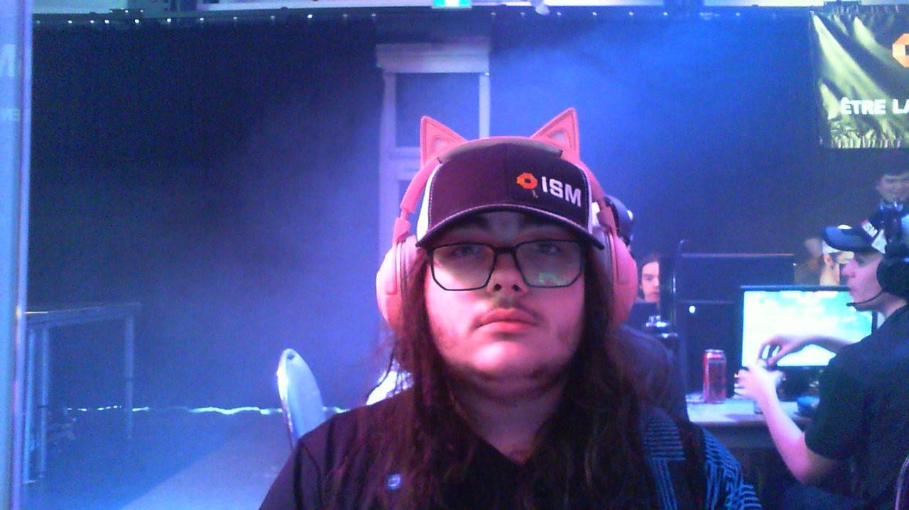

Safariminer
Quick presentation
Hello! I'm a canadian developer and musician who uses C++, PHP, ACS, ManiaScript, and JS to make silly projects.
I am passioned with esports, both in playing competitively and looking at statistics of esports. I have previously played for a scholar League of Legends team and on a Counter-Strike team named Vanblanche, along with two of my friends and two poor yet kind souls who were matched with us. I am currently a TrackMania player, competing in TRACKMANIA™(2020) and in TrackMania² Lagoon(where I am #1 in Canada).
I began music at around 5, starting with drums and then shortly thereafter switching to guitar where I still am to this day. One thing I enjoy of playing music is playing it live; it's challenging to only have one take for multiple musicians at once with no chance to restart it from the start.
I began programming at 7, obviously with Scratch, where I continued for a long time before learning HTML along with CSS. At around 9, I started looking into C++, and I started learning Unity at around 12. I have fond memories of using Unity, although I doubt I would use it again for a project. In 2018, as I was 11, I bought an old game, a game far older than me, but that would change my life forever: The Ultimate DOOM, a reedition of DOOM(1993) with an additional episode, "Thy Flesh Consumed". I started to look into modding; it was about the same time SI6IL came out. I was instantly hooked. Safe to say I probably wouldn't have gone so deep into programming if it wasn't for DOOM. Nowadays, I still use the DOOM engine for projects as it's the engine I know the most.

Me at LANCFPR 2024
About me
- Age: 16
- Gender: Probably.
- Pronouns: hell yeah nouns are amazing- uh I mean he/any, for now at least
- Sexual orientation: pansexual
- Hobbies: Programming, music creation, gaming, PC building, sleeping, reading, writing poems and songs, watching TheWeatherNetwork.
- Musical artists I like: Philippe Katerine, Stupeflip, Les Cowboys Fringants, Mononc' Serge, Plume Latraverse, Damien, Wojtek, Zaho de Sagazan, Harmonium, Beau Dommage, Les Denis Drolet, Bleed Radio Bleed, Aphex Twin, Stromae, Normand L'Amour, Orloge Simard, Lisa Leblanc, Aquaplane, Lemon Demon, Da Vinci's Notebook, Tally Hall, Davodka, Jacky Vincent, Objayda, Ronan Hardiman, Arnô, Raccoon, Orelsan, Davodka, Polyphia, Daniel DeShaime, Panchiko, Rock et Belles Oreilles, n°c4d1ll4c, Boogie Reverie, Jim Corcoran, Caravane, M.C. Salò, Changeline, Phuture Doom, Jacno, Rocky Gordon, Hello Libido
- Games I like: TrackMania(especially TrackMania² Lagoon, TrackMania² Stadium, TRACKMANIA™(2020), and TrackMania United Forever), SEUM: Speedrunners From Hell, POSTAL: Brain Damaged, Team Fortress 2, Doom, Quake, Industria, Celeste, The Beginner's Guide, The Stanley Parable, Will You Snail?, Title_Pending, Counter-Strike, The Binding of Isaac, Minecraft, Dwarf Fortress, UpGun, Train Simulator, TIS-100, Darwin's Test
- Things I don't like: Cheese, pop music, Rust, games you have to crack to play.
- Languages I use: C++, PHP, ACS, ManiaScript, JS, C#, Assembly, AmoLang which is a custom variant of a language that won't fit here
Projects I'm proud of
Airlines(2021)
Airlines was a small first person platformer made in Unity.
Play the original or Play the Deluxe version3BUNE(2022 - today)
3BUNE is a tribune suite made in PHP. It contains both a coincoin and a bouchot. It is ready to host; download the zip, unzip it, run a PHP web server in the folder, then go to /coincoin.html to begin chatting.
AverageCégépien(2022-today)
Site created because of 3BUNE, has a WIP streaming service, is pretty nice, is hosted on a Raspberry Pi in my room, unstable, tends to be flagged as scam because it runs through a tunnel.
Visit itDead Weather(2024)
I knew I would have to create a game for school, and I wanted to make a custom engine for it. Beforehand, to try it out, I made a game for the Acerola Jam Zero with it. I then later realized it had some issues with OBJ loading and didn't have the time to fix it. So, as you guessed, I am currently using the DOOM engine for that school project. :D
In Dead Weather, you have to save a local TheWeatherNetwork from a ghost attack. I uh... I don't even know.
AudiFrag(2024-today)
The school project itself. AudiFrag is an arena shooter where you play as members of a privately-owned experimental defense group training for war. Everyone has its reason for being there, be it by choice or by obligation. I am making this game with two friends from school and you can join the Discord server for it to know when it drops. We are currently developing this game as a school project but we plan on keeping it going until we are satisfied with the state of the game. It uses the GZDoom game engine, so that, even if development halts, the game can stay alive from modding.
Look at its website or Join its DiscordEsports history
Bloody Red Rooms(2019)
Rather anecdotic, was a shortlived team from when I was in elementary school. Counter-Strike team, to be precise.
LEGEND5(2023)
Also rather anecdotic and shortlived, it was a scholar League of Legends team. Hadn't played much League before, not planning on playing it ever again.
Vanblanche(2024)
Counter-Strike team made up for LANCFPR 2024. We had four rounds, lost respectively 1-13, 2-13, 1-13, 4-13. I plan on training to participate in LANCFPR 2025.
Solo - Trackmania World Tour 2024
I couldn't participate in the April monthly cup. I hope to participate in either the May monthly cup or the LAN ETS 2024 to at least say I've played legitimate pro TrackMania.